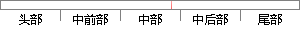

这里采用对两路声音信号分开进行处理。
片段位置图

相似结果|
相似片段 1：信号，进行如下处理图3．1虚拟现实中声音信号的处理声源提供的单声道信号首先分成左声道和右声道两路，在计算机中采用复制的方法就可以实现。然后计算机从外部接口或内部程序获取空间位置的参数，这里主要是水平
|
※ 片段修改建议 ※
近似词参考：- 采用：采取 接纳 采纳
- 信号：旌旗灯号
- 分开：分隔 分隔隔离分散 离开
- 进行：举行
- 处理：处置 处置惩罚
系统自动生成语句：这里采取对两路声音旌旗灯号分隔举行处置。
注：本片段修改建议为系统自动生成，仅供参考。